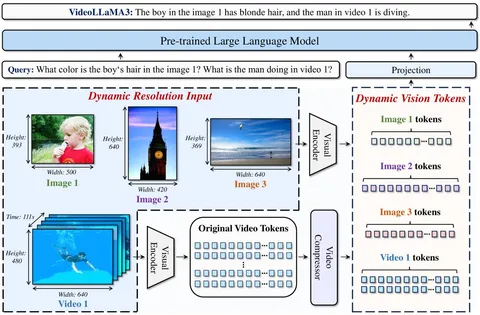

Сегодня разбираем статью о VideoLLaMA 3. По сути — это «yet another VLM» со стандартной архитектурой, описанной на многим знакомой схеме, но есть интересные детали.
{kind=link}
Авторы называют свою модель вижнцентричной (vision-centric) — она умеет работать и с видео, и с картинками. В решении используется визуальный энкодер, который обрабатывает изображения покадрово. Картинки передаются в динамическом разрешении и проходят через визуальный трансформер в исходном размере.
С видео можно поступить так же, но это приводит к взрывному росту числа токенов, который выходит за пределы контекста опенсорсных моделей. Чтобы решить эту проблему, авторы вводят компонент под названием Video Compressor.
С его помощью видео разбивают на патчи и оценивают разницу между кадрами. В каждом новом кадре считается только разница с патчами предыдущего кадра. Все кадры кодируются, и каждое изображение превращается в несколько визуальных токенов. Затем видеокомпрессор удаляет те, что содержат дублирующуюся информацию. Патч считается дублирующим, если разница между соответствующими патчами двух соседних кадров меньше заданного значения.
Такой подход авторы называют Differential Frame Pruner. Он позволяет обрабатывать видео, сохраняя единый визуальный энкодер для картинок и видео.
Обучение проходит в четыре стадии:
1. Vision Encoder Adaptation — обучают только визуальный энкодер и проекционный слой. Используют SigLIP, который работает с фиксированными разрешениями, и адаптируют его под произвольные. Процесс идёт в VLM-сетапе: визуально-языковая модель заморожена, а SigLIP и проекция — разморожены. Обучение проводят на кэпшенах, документах и Scene Text (BLIP3-OCR-Recap), охватывая разные домены.
2. Vision-Language Alignment — аналог претрейна: вся сеть разморожена, обучают на максимальном объёме данных.
3. Multi-task Fine-tuning — используют более качественные данные. Хотя их объём почти совпадает с претрейном, здесь больше детализированных срезов.
4. Video-centric Fine-tuning — основной упор на видео и текст, изображений в обучающей выборке меньше.
Интересен первый этап, где визуальный энкодер адаптируют к произвольному разрешению в VLM-сетапе. Дальше обучение идёт по стандартному сценарию.
Детали реализации
Авторы используют опенсорсные датасеты для кэпшенов (COYO 700M, VL3-Syn7M) и предлагают свой способ перекэпшенивания картинок.
Сначала делают базовую фильтрацию по Aspect Ratio и Aesthetic Score. Затем применяют подход Text-Image Similarity Calculation: генерируют кэпшен через BLIP2, вычисляют CLIP-скор между ним и картинкой. Если скор низкий, картинку считают сложной, плохой или нерелевантной — и отбрасывают. Выбор BLIP2 неочевиден, поскольку он генерирует слабые кэпшены, но для фильтрации сложных изображений метод выглядит рабочим.
Дальше кластеризуют фичи через CLIP и выбирают изображения из каждого кластера в равных пропорциях. Затем перекэпшенивают их с помощью InternVL2-26B и получают набор синтетических кэпшенов, которые считают качественными.
Отдельно интересен способ подачи видео — Timestep Token. Видео позиционно кодируют текстом, добавляя текстовые токены в соответствии с длительностью фрейма. Влияет ли это на качество, неясно, ablation-экспериментов нет. Другие работы, например Qwen, используют отдельные позиционные эмбеддинги с темпоральным измерением, а здесь просто прописывают время текстом.
Тесты проводились на мультимодальных бенчмарках и показали, что модель стабильно опережает Qwen2.5-VL, но подробного сравнения нет. В целом главная проблема статьи — отсутствие полноценных ablation-экспериментов.
Также интересно, что несмотря на название VideoLLaMA3, Llama здесь нет: в качестве языковой модели используют Qwen2.5-2B, в качестве визуальной — SigLIP.
Обзор подготовил
CV Time
